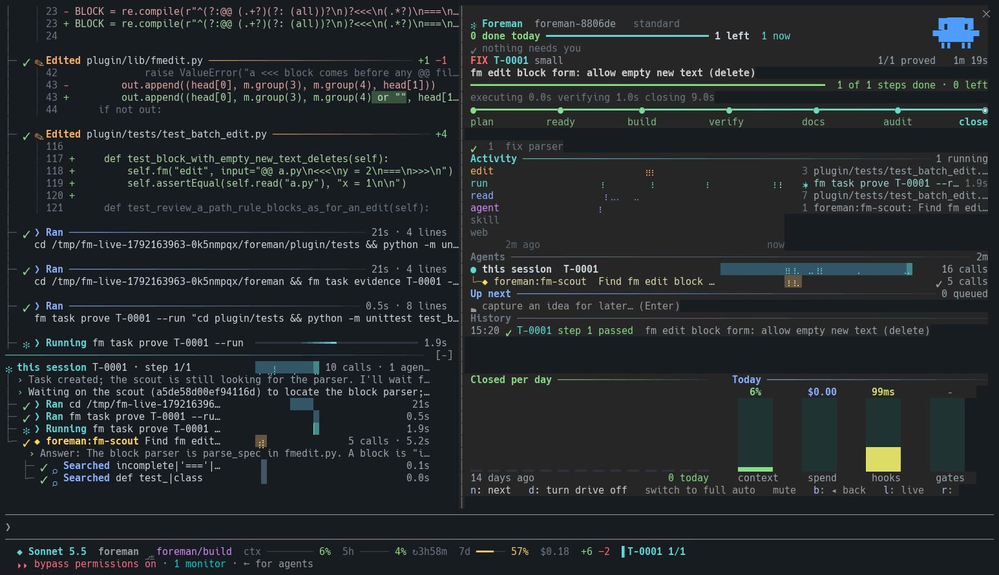

The panel
Foreman, live inside Claude Code
The foreman-ui mod shows Foreman's state as you work: a card above the prompt, a docked panel beside the chat, a status line under it, and a chat that reads as a tree.

What it shows
- The task, its stage from plan to close, and the step bar.
- Activity lanes for edits, runs, reads, agents, skills and web calls.
- Agents as a graph with their own recent calls and time bars.
- Today: context, spend, hook time and gates as small charts.
Show the numbers
| value | budget | |
|---|---|---|
| UserPromptSubmit | 92.6 | 150 |
| SessionStart | 63.4 | 150 |
| Stop | 47.6 | 150 |
| PostToolUse | 41.5 | 150 |